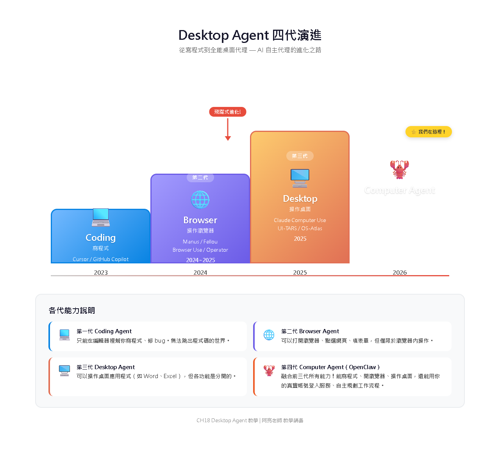
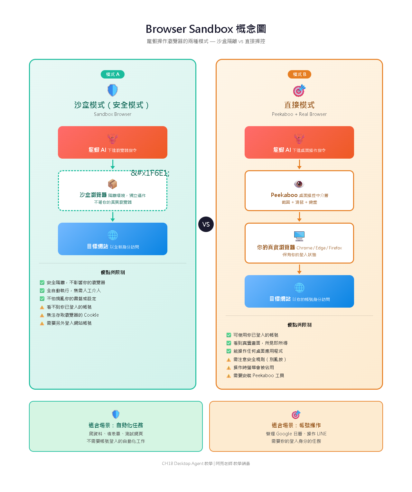
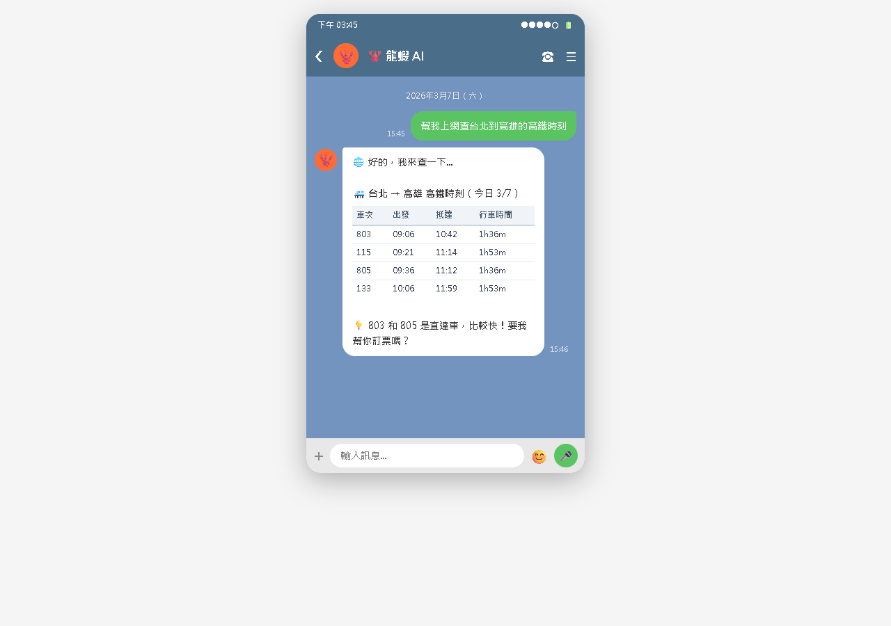
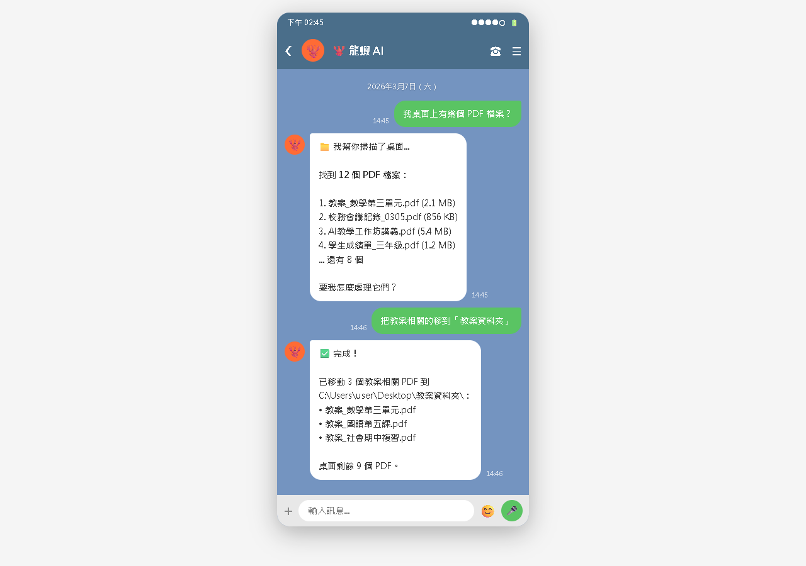
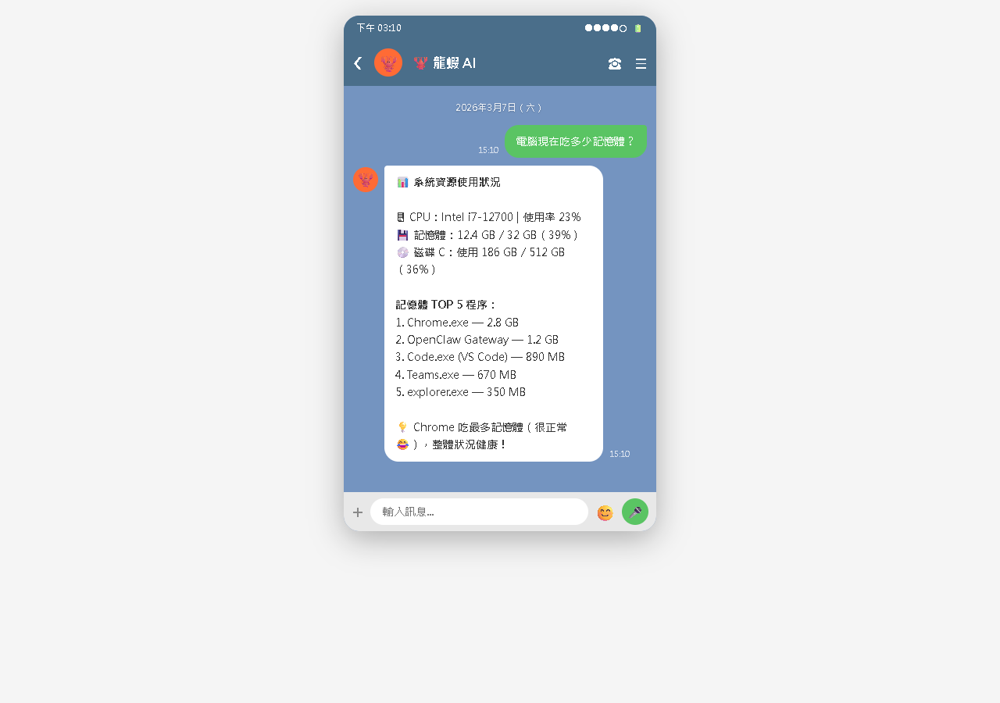

AI Agent 自主代理三王實戰
讓龍蝦走出聊天室，直接在你的電腦上幫你做事——瀏覽網頁、管理檔案、執行腳本，遠端遙控你的電腦
到目前為止，龍蝦一直住在「聊天室」裡——你傳訊息，它回訊息。但如果龍蝦能走出聊天室，直接在你的電腦上幫你做事呢？

| 世代 | 類型 | 能力 |
|---|---|---|
| 第一代 | Coding Agent | 寫程式、操作終端機 |
| 第二代 | Browser Agent | 瀏覽網頁、填表單 |
| 第三代 | Desktop Agent | 操控電腦上的應用程式 |
| 第四代 | Computer Agent | 完全自主操控整台電腦 |
想像這些場景——全部都能實現：
打開網站、搜尋資訊、擷取內容
建立、複製、移動、重新命名檔案和資料夾
跑 Python 腳本、PowerShell 指令
讀取 PDF、Word、Excel，產生報告
截取螢幕畫面分析
查看系統資源、管理程序
本章各項功能需要安裝對應的技能。安裝完記得 openclaw gateway restart！
| 功能 | 技能名稱 | 安裝指令 | 備註 |
|---|---|---|---|
| 瀏覽網頁 | browser-sandbox | clawdhub install browser-sandbox | 需另裝 Playwright |
| 檔案管理 | file-manager | clawdhub install file-manager | 建議設定操作範圍 |
| 磁碟盤點 | disk-audit | clawdhub install disk-audit | 掃描大檔案 |
| 系統監控 | system-monitor | clawdhub install system-monitor | CPU / 記憶體 / 磁碟 |
| 螢幕截圖 | screenshot | clawdhub install screenshot | 截圖分析畫面 |
npx playwright install chromium 會下載約 200MB 的瀏覽器引擎，依網路速度需要幾分鐘。看到進度條在跑就是正常的，請耐心等候。
Browser Sandbox 讓龍蝦操控一個「沙盒瀏覽器」——在安全環境中運行的瀏覽器。不會動到你 Chrome 裡的書籤、密碼和瀏覽紀錄。

# 安裝瀏覽器操控技能 clawdhub install browser-sandbox # 安裝 Playwright 瀏覽器 npx playwright install chromium
在 TOOLS.md 裡加上：
## Browser Sandbox - 瀏覽器: Chromium - 無頭模式: 是（不會彈出瀏覽器視窗） - 截圖: 每次操作後自動截圖回報5 / 12

你：幫我查台北到花蓮 的火車時刻 龍蝦：🚂 明天早上班次： 06:30 太魯閣號 410 次 07:00 自強號 208 次 08:00 太魯閣號 412 次
你：幫我看 PTT 八卦版 今天有什麼熱門 龍蝦：📋 今日熱門前 5 篇： 1. [爆卦] xxx（推:587） 2. [問卦] xxx（推:423） 3. [新聞] xxx（推:356）
你：幫我填 Google Forms 第一題選A 第二題台北市 龍蝦：✅ 已完成填寫 最後需要你確認送出 要我幫你送出嗎？

你：桌面上有多少個 PDF 檔？
龍蝦：📁 桌面上有 12 個 PDF 檔案：
- 會議記錄_0301.pdf (2.3MB)
- 報價單.pdf (156KB)
- 教案_CH5.pdf (890KB)
...（共 12 個）
你：把桌面上所有的 PDF 移到「文件/PDF」資料夾
龍蝦：即將移動 12 個 PDF 檔案。確認執行嗎？
你：確認
龍蝦：✅ 已移動 12 個檔案到 C:\Users\你的名稱\Documents\PDF\
你：幫我整理下載資料夾，把檔案分類
龍蝦：📂 掃描完成，共 47 個檔案。建議分類：
📁 文件（PDF、Word、Excel）→ 18 個
📁 圖片（JPG、PNG）→ 12 個
📁 壓縮檔（ZIP、RAR）→ 8 個
📁 安裝檔（EXE、MSI）→ 5 個
📁 其他 → 4 個
要執行嗎？
7 / 12
CH15 提到的 disk-audit 技能就是檔案管理的好例子：
你：幫我掃描 D 槽，找出佔最多空間的前 10 個檔案
龍蝦：🔍 掃描中...
📊 D 槽 Top 10 大檔案：
1. 遊戲安裝檔.iso (4.7GB)
2. 備份_202601.zip (2.1GB)
3. 教學影片.mp4 (1.8GB)
...
總共佔用 15.3GB。要處理哪一個？
你：幫我把「照片」資料夾裡的檔案，
全部改名成「旅遊_日期_序號」的格式
龍蝦：📁 找到 85 張照片。
我會根據照片的拍攝日期（EXIF 資訊）重新命名。
例如：IMG_0001.jpg → 旅遊_20260215_001.jpg
確認執行嗎？
龍蝦可以執行 PowerShell 和 Python 腳本，間接操控其他應用程式。
你：幫我把桌面上的 report.md 轉成 PDF 龍蝦：正在轉換... ✅ 已產生 report.pdf 放在同一個資料夾裡。
你：打開 sales.xlsx 算出每月銷售總額 龍蝦：📊 銷售總額統計： 1月：$125,000 2月：$142,000 3月：$168,000 Q1 累計：$435,000

你：我的電腦最近很慢，幫我看看什麼佔最多記憶體
龍蝦：🖥️ 記憶體使用：16GB 中已用 13.2GB（82%）
Top 5：
1. Chrome（32 個分頁）→ 4.1GB
2. VS Code → 1.2GB
3. Discord → 800MB
4. Teams → 650MB
5. Node.js（龍蝦 Gateway）→ 180MB
建議：Chrome 分頁太多了！
9 / 12
Desktop Agent 的能力很強大，但能力越大責任越大。讓 AI 操控你的電腦有一些安全風險需要注意。
涉及檔案刪除、移動、修改的操作，龍蝦會先問你確認
瀏覽器操作在沙盒裡進行，不影響你的正常瀏覽器
龍蝦只能存取你授權的資料夾，不是整台電腦
所有操作都有 log，你可以回顧龍蝦做了什麼
| 區域 | 權限 | 範例 |
|---|---|---|
| 🟢 自由操作 | 不需確認 | 桌面、文件資料夾、下載資料夾 |
| 🟡 需要確認 | 每次確認 | 其他磁碟（D:、E:）、應用程式資料夾 |
| 🔴 絕對禁止 | 禁止存取 | C:\Windows\、Program Files、密碼檔案 |
需要安裝對應的技能。瀏覽器裝 browser-sandbox、檔案裝 file-manager、系統監控裝 system-monitor。
可以！只要電腦開著、Gateway 在跑。用手機 LINE 傳指令，龍蝦就會在你的電腦上執行——遠端遙控！
預設會先確認才執行，且刪除操作移到資源回收桶（trash > rm），不是永久刪除。
Playwright 約佔 200-500MB 記憶體，但只在執行瀏覽器任務時才啟動。檔案管理基本不影響效能。
龍蝦能瀏覽網頁、查資料、填表單，在安全沙盒中操作。
整理檔案、掃描磁碟、批次處理、智慧分類。
轉檔、處理資料、管理系統，透過腳本間接操控應用程式。
確認機制 + 沙盒隔離 + 範圍限制 + 日誌記錄，四層防護。
📖 下一章預告：CH19 多台電腦，一起聽話
如果你有好幾台電腦——家裡、辦公室、雲端——想讓龍蝦同時管理所有的機器？多台電腦上的龍蝦串成一個網路，互相合作！